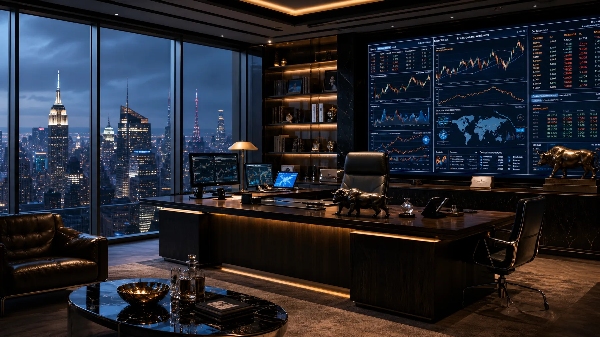

剧本拆分 Skill
用时长、叙事节点与空间连续性，把长剧本编译成可执行镜头。
AI VISUAL DIRECTOR · STORY ENGINE · 2026
让想象，成为镜头。
视觉开发 / 导演流程 / 提示词工程
从世界设定到最终成片。
01 / VISUAL DEVELOPMENT
角色、场景与动态影像，
共同建立一个可信的世界。

SCENE02 / DIRECTOR WORKFLOW
展示如何思考镜头，
而不只是生成画面。
从剧本到最终画面
03 / PROMPT ENGINEERING
让创意变成可复用、可扩展、
可稳定交付的生产系统。
用时长、叙事节点与空间连续性，把长剧本编译成可执行镜头。
统一场景、光影、站位、材质、引用和负向约束的输出协议。
A / B 机位路由、参考库与 QA 清单，让复杂工作流稳定复用。
ABOUT / CONTACT
AI 短剧 · 互动影游 · 商业影像 · 视觉开发
2256290836@QQ.COM ↗